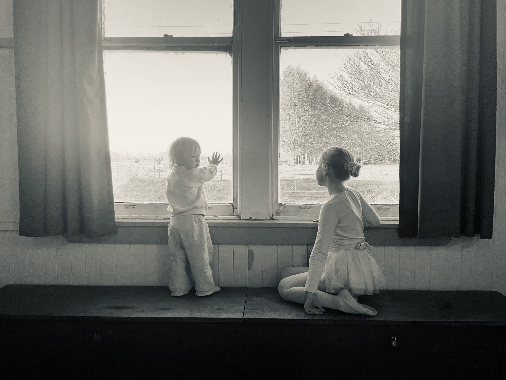
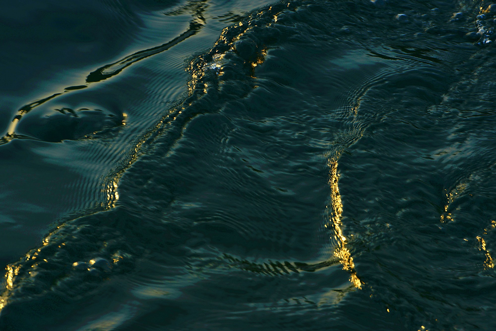
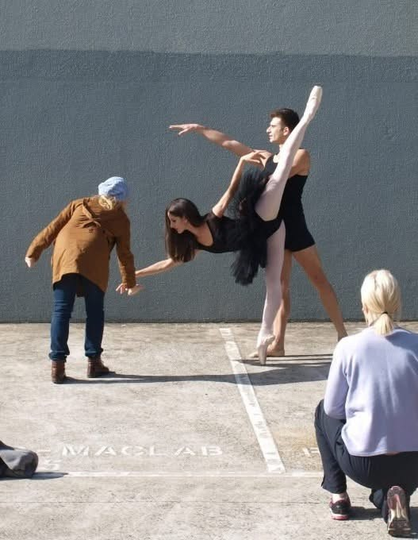
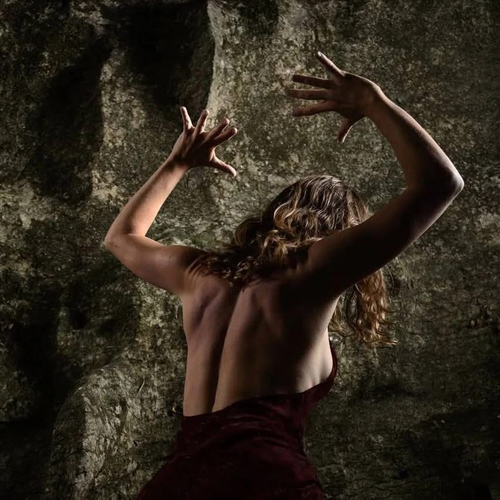
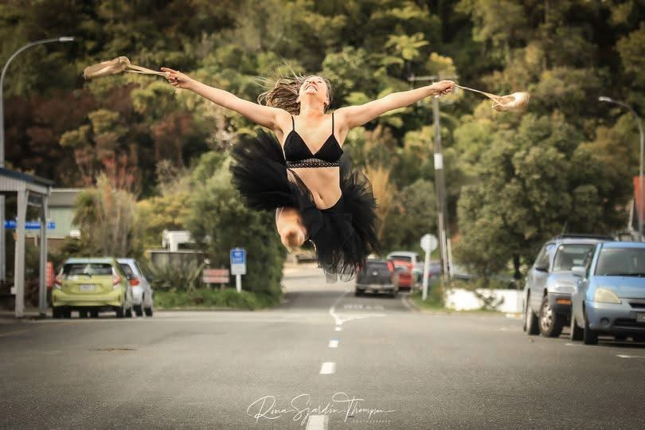
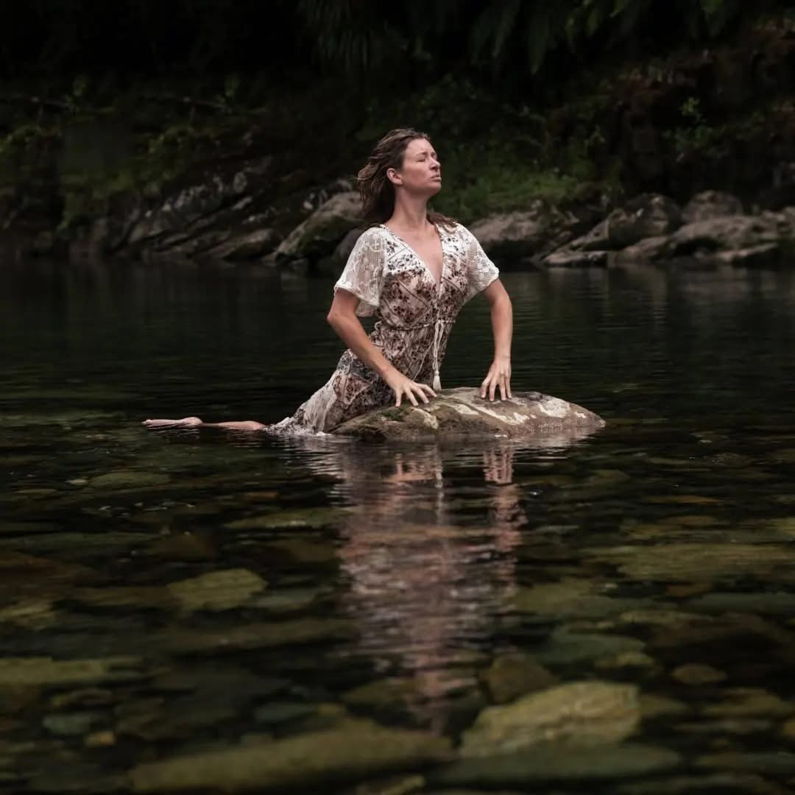
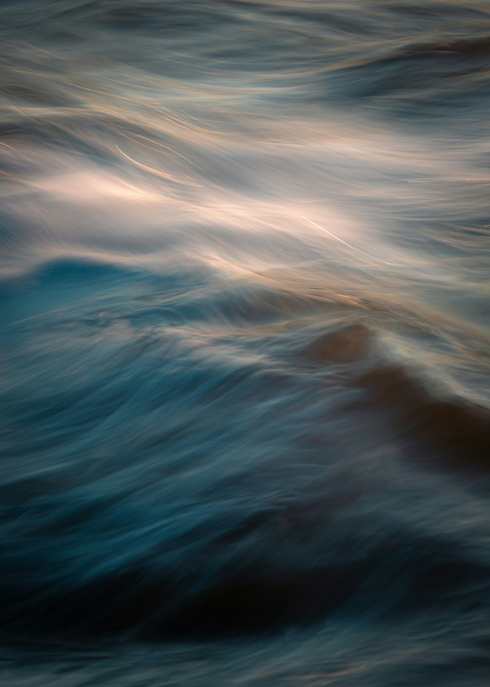

01

Children’s Dance
Kinder Ballet & Creative Movement
Pre-Primary & Primary Ballet
Intermediate & Senior Ballet
Choreographic Lab

Mohua / Golden Bay · Aotearoa
Dance / Movement / Expression / Connection
Dance & movement classesAlexandra Tylee
Photography: Yoo Soosang / Unsplash
“Movement connects us —
to ourselves, to each other,
to the natural world.”
Led by Alexandra Tylee (Miss Ali)

Kinder Ballet & Creative Movement
Pre-Primary & Primary Ballet
Intermediate & Senior Ballet
Choreographic Lab

Adult Ballet & Contemporary
Adult ballet · Tuesday · 5:40–7:00 pm

Women’s Intuitive Movement
Fortnightly · 1.5 hours · $20–30

She founded a performance collective for amateur adult contemporary dancers, creating a space for people to experience the joy, discipline and connection of making performance work together. Through this collective, she returned to choreographing and producing shows, works and film, rediscovering a part of her creative practice that she intends to return to more fully when her children are older.
Creative workAlexandra is a dancer, choreographer, teacher and movement facilitator whose work has evolved across classical ballet, contemporary dance, yoga and intuitive movement.
About Alexandra
